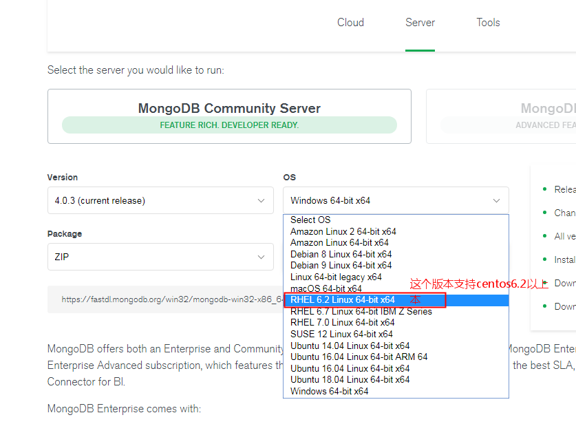
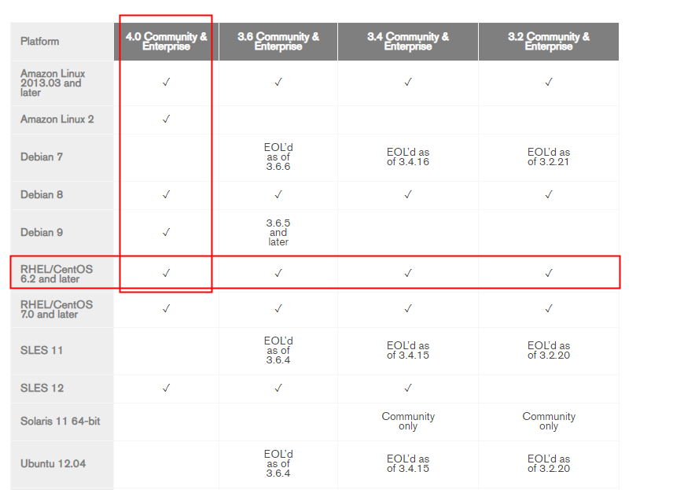
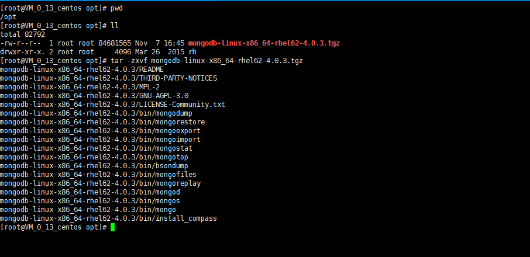
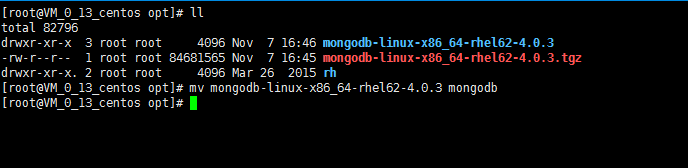
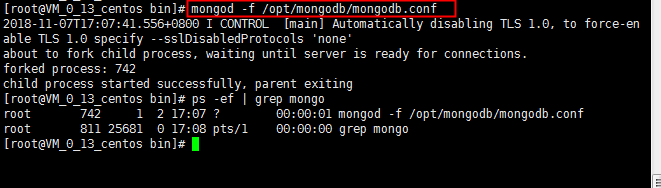

上mongodb官网https://www.mongodb.com下载二进制安装包（二进制安装包不用编译，直接运行）


将mongodb的二进制安装包上传到linux服务器的/opt目录下，并解压缩

重命名解压之后为mongodb

手动创建存放数据文件的目录、日志文件的目录、pid文件的目录
mkdir -p /mongodb/data
mkdir -p /mongodb/log
mkdir -p /mongodb/pidfile
编写mongodb的配置文件mongod.conf
vim /opt/mongodb/mongod.conf
以yum方式安装mongodb自动生成在/etc下的mongod.conf文件
# mongod.conf
# for documentation of all options, see:
# http://docs.mongodb.org/manual/reference/configuration-options/
# where to write logging data.
systemLog:
destination: file
logAppend: true
path: /var/log/mongodb/mongod.log
# Where and how to store data.
storage:
dbPath: /var/lib/mongo
journal:
enabled: true
# engine:
# mmapv1:
# wiredTiger:
# how the process runs
processManagement:
fork: true # fork and run in background
pidFilePath: /var/run/mongodb/mongod.pid # location of pidfile
timeZoneInfo: /usr/share/zoneinfo
# network interfaces
net:
port: 27017
bindIp: 127.0.0.1 # Enter 0.0.0.0,:: to bind to all IPv4 and IPv6 addresses or, alternatively, use the net.bindIpAll setting.
#security:
#operationProfiling:
#replication:
#sharding:
## Enterprise-Only Options
#auditLog:
#snmp:
自己加上注释修改后的mongod.conf文件
# mongod.conf
# for documentation of all options, see:
# http://docs.mongodb.org/manual/reference/configuration-options/
# 指定日志文件存放的位置
systemLog:
destination: file
logAppend: true #以追加的方式保存日志
path: /mongodb/log/mongod.log #日志文件的存放位置，就是上一步我们自己手动创建的mongodb日志文件的存放目录
# 指定数据文件存放的位置
storage:
dbPath: /mongodb/data #数据文件的存放位置，就是上一步我们自己手动创建的mongodb数据文件的存放目录
journal:
enabled: true #启动日志选项，mongodb的数据操作将会写入到journal文件夹的文件里
# engine:
# mmapv1:
# wiredTiger:
# how the process runs
processManagement:
fork: true # 以守护进程的方式启动
pidFilePath: /mongodb/pidfile/mongod.pid # pid文件的存放位置，就是上一步我们自己手动创建的mongodb日志文件的存放目录
timeZoneInfo: /usr/share/zoneinfo
# network interfaces
net:
port: 27017 # 绑定的端口号
bindIp: 127.0.0.1 # Enter 0.0.0.0,:: to bind to all IPv4 and IPv6 addresses or, alternatively, use the net.bindIpAll setting.
#security:
#operationProfiling:
#replication:
#sharding:
## Enterprise-Only Options
#auditLog:
#snmp:
编辑/etc/profile，添加mongodb的路径到系统的环境变量中
用命令：mongod --config /opt/mongodb/mongod.conf（或者mongod -f /opt/mongodb/mongod.conf）启动mongodb服务

设置mongodb开机自动启动
未完待续。。。。
设置mongodb用户名密码
未完待续。。。。
设置mongodb远程访问
未完待续。。。。